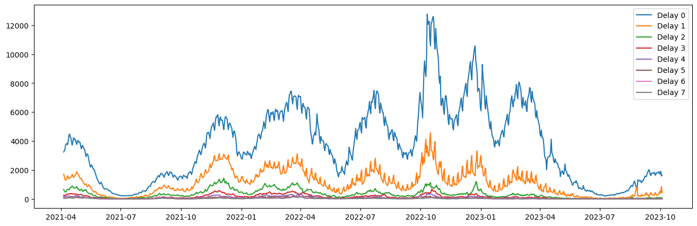
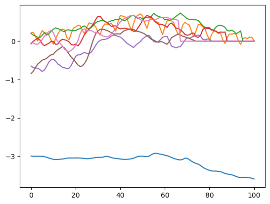
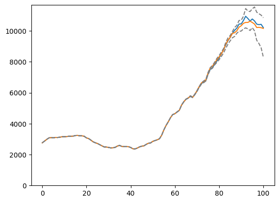
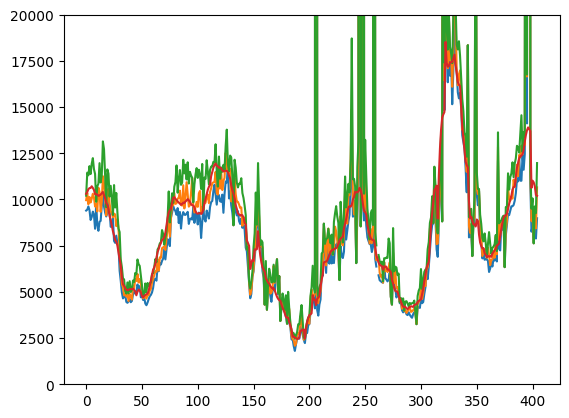

from jax import config
config.update("jax_enable_x64", True)
from ssm4epi.models.hospitalization import (
hospitalization_model,
dates,
unique_a,
h_by_age,
I_by_age,
)
from ssm4epi.models.util import from_consecutive_logits
from isssm.importance_sampling import mc_integration
from isssm.kalman import state_mode
from jax import vmap
from ssm4epi.patch import full_deps
import jax.numpy as jnp
from pyprojroot import here
import matplotlib.pyplot as plt
from isssm.estimation import initial_theta, mle_pgssm
from isssm.laplace_approximation import laplace_approximation as LA
from isssm.modified_efficient_importance_sampling import (
modified_efficient_importance_sampling as MEIS,
)
from isssm.importance_sampling import pgssm_importance_sampling, ess_pct
import jax.random as jrn
import pandas as pd
import fastcore.test as fct
from tqdm.notebook import tqdmA second try at nowcasting model
from typing import NamedTuple
from jaxtyping import Float, Array, PRNGKeyArray
from scipy.optimize import OptimizeResult
from isssm.typing import GLSSMProposal
from datetime import date
from ssm4epi.models.hospitalization import hospitalization_dataWe focus on only nowcasting for the 00+ age group.
Hospitalization and incidence data
hosp_data = hospitalization_data[hospitalization_data.a == "00+"]
h = hosp_data.pivot(index="s", columns="k", values="h").to_numpy()
I = hosp_data.pivot(index="s", columns="k", values="I").to_numpy()[:, 0]
dates = pd.to_datetime(hospitalization_data["s"].unique(), format="%Y-%m-%d").dateplt.figure(figsize=(16, 5))
plt.plot(pd.to_datetime(dates, format="%Y-%m-%d"), h)
plt.legend([f"Delay {i}" for i in range(h.shape[1])])
plt.show()
plt.figure(figsize=(16, 5))
plt.plot(pd.to_datetime(dates, format="%Y-%m-%d"), I)
plt.legend([f"Incidence"])
plt.show()
Data structures
class PredictionResult(NamedTuple):
mean: Float[Array, "..."]
sd: Float[Array, "..."]
quantiles: Float[Array, "k ..."]
quantiles_of_interest: Float[Array, "k"]
class HospitalizationNowcastingResult(NamedTuple):
a_index: int
h: Float[Array, "..."]
I: Float[Array, "..."]
dates: pd.DatetimeIndex
y_miss: Float[Array, "np1 p"]
y_true: Float[Array, "np1 p"]
theta0: Float[Array, "5"]
theta0_result: OptimizeResult
proposal: GLSSMProposal
key: PRNGKeyArray
ess_pct: Float
y_sum_predict: PredictionResultfrom ssm4epi.models.hospitalization import estimate_theta0_missing, LA_missing- Parameter estimation
- only for fully available observations
- LA for full missing model
- nowcasting
from jaxtyping import PRNGKeyArray
def find_index_of_date(dates: pd.DatetimeIndex, target_date: date) -> int:
((where,),) = jnp.where(dates == target_date)
return int(where)fct.test_eq(find_index_of_date(dates, dates[0]), 0)
fct.test_eq(find_index_of_date(dates, dates[-1]), len(dates) - 1)class Configuration(NamedTuple):
dates: pd.DatetimeIndex
n_delay: int # number of delays
key: PRNGKeyArray
h: Float[Array, "n n_delay"]
I: Float[Array, "n"]
n: int
n_weekday: int = 2 # number of weekday effects
@classmethod
def from_dates(cls, start: date, end: date, n_delay: int) -> "Configuration":
i_start = find_index_of_date(dates, start)
i_end = find_index_of_date(dates, end)
h = hosp_data.pivot(index="s", columns="k", values="h").to_numpy()[
i_start : (i_end + 1), :n_delay
]
h = jnp.array(h)
I = hosp_data.pivot(index="s", columns="k", values="I").to_numpy()[
i_start : (i_end + 1), 0
]
I = jnp.array(I)
n, n_delay = h.shape
return Configuration(
dates=pd.date_range(start, end, freq="D"),
n_delay=n_delay,
key=jrn.PRNGKey(2423901241),
h=h,
I=I,
n=n,
)start_date = date(2022, 1, 1)
end_date = date(2023, 1, 1)
config = Configuration.from_dates(start_date, end_date, n_delay=7)
fct.test_eq(config.dates[0].date(), start_date)
fct.test_eq(config.dates[-1].date(), end_date)
fct.test_eq(config.n_delay, 7)from isssm.typing import GLSSM, PGSSM
from isssm.kalman import simulation_smoother
from functools import partial
from isssm.importance_sampling import log_weights
def pgssm_importance_sampling_missing(
y: Float[Array, "n+1 p"], # observations
model: PGSSM, # model
z: Float[Array, "n+1 p"], # synthetic observations
Omega: Float[Array, "n+1 p p"], # covariance of synthetic observations
N: int, # number of samples
key: PRNGKeyArray, # random key
) -> tuple[
Float[Array, "N n+1 m"], Float[Array, "N"]
]: # importance samples and weights
u, A, D, Sigma0, Sigma, v, B, dist, xi = model
missing_z_indices = jnp.isnan(z).any(axis=-1)
if jnp.any(missing_z_indices):
B = B.at[missing_z_indices].set(0.0)
v = v.at[missing_z_indices].set(0.0)
Omega = Omega.at[missing_z_indices].set(0.0)
z = z.at[missing_z_indices].set(0.0)
glssm = GLSSM(u, A, D, Sigma0, Sigma, v, B, Omega)
key, subkey = jrn.split(key)
s = simulation_smoother(glssm, z, N, subkey)
model_log_weights = partial(log_weights, y=y, dist=dist, xi=xi, z=z, Omega=Omega)
lw = vmap(model_log_weights)(s)
return s, lwfrom ssm4epi.models.hospitalization import (
account_for_nans,
make_y_nan,
estimate_theta0_missing,
LA_missing,
)
from isssm.importance_sampling import prediction
def make_theta_manual(y, I):
p0_hat = y[:7].sum() / I[:7].sum()
exp_theta = jnp.array(
[
1**2, # s2_p
1**2, # s2_q
0.1**2, # s2_W
0.1**2, # s2_0
p0_hat, # p0
]
)
theta_manual = jnp.log(exp_theta)
return theta_manual
percentiles_of_interest = jnp.array([0.025, 0.1, 0.25, 0.5, 0.75, 0.9, 0.975])
class NowcastingDebuggingResult(NamedTuple):
h: Float[Array, "n n_delay"]
I: Float[Array, "n"]
y_miss: Float[Array, "np1 p"]
y_true: Float[Array, "np1 p"]
theta_manual: Float[Array, "5"]
theta0: Float[Array, "5"]
theta0_result: OptimizeResult
proposal: GLSSMProposal
key: PRNGKeyArray
ess_pct: Float
def nowcast_hospitalizations(config: Configuration):
key = config.key
h = config.h
I = config.I
np1, n_delay = h.shape
n_weekday = config.n_weekday
aux = (np1, n_delay, n_weekday, I)
h_nan = make_y_nan(h)
theta_manual = make_theta_manual(h_nan, I)
theta0_result = estimate_theta0_missing(
h_nan,
theta_manual,
aux=aux,
I=I,
)
theta0 = theta0_result.x
missing_y_indices = jnp.isnan(h_nan)
missing_s_indicies = jnp.concatenate(
(jnp.full((np1, 1), False, dtype=bool), missing_y_indices[:, :-1]), axis=-1
)
_, y_miss = account_for_nans(
hospitalization_model(theta0, aux),
h_nan,
missing_y_indices,
missing_s_indicies,
)
_model_miss = lambda theta, aux: account_for_nans(
hospitalization_model(theta, aux), h_nan, missing_y_indices, missing_s_indicies
)[0]
model_miss0 = _model_miss(theta0, aux)
proposal_la, info_la = LA_missing(y_miss, model_miss0, 100, eps=1e-10)
nan_z_indices = jnp.isnan(proposal_la.z).any(axis=-1)
if jnp.any(nan_z_indices):
missing_y_indices = missing_y_indices.at[nan_z_indices].set(True)
# where z is missing completely, s has to be missing as well
missing_s_indicies = missing_s_indicies.at[nan_z_indices].set(True)
_, y_miss = account_for_nans(
hospitalization_model(theta0, aux),
h_nan.at[nan_z_indices].set(jnp.nan),
missing_y_indices,
missing_s_indicies,
)
_model_miss = lambda theta, aux: account_for_nans(
hospitalization_model(theta, aux),
h_nan.at[nan_z_indices].set(jnp.nan),
missing_y_indices,
missing_s_indicies,
)[0]
model_miss0 = _model_miss(theta0, aux)
proposal_la = proposal_la._replace(
z=proposal_la.z.at[nan_z_indices].set(0.0),
Omega=proposal_la.Omega.at[nan_z_indices].set(0.0),
)
key, subkey = jrn.split(key)
samples, log_weights = pgssm_importance_sampling(
y_miss,
model_miss0,
proposal_la.z,
proposal_la.Omega,
10000,
subkey,
)
ess_pct_nowcast = ess_pct(log_weights)
def f_nowcast(x, s, y):
return jnp.sum(
(missing_y_indices * y) + (1 - missing_y_indices) * y_miss, axis=-1
)
key, subkey = jrn.split(key)
preds = prediction(
f_nowcast,
y_miss,
proposal_la,
_model_miss(theta0, aux),
10000,
subkey,
percentiles_of_interest,
hospitalization_model(theta0, aux),
)
debugging_result = NowcastingDebuggingResult(
h=h,
I=I,
y_miss=y_miss,
y_true=h_nan,
theta_manual=theta_manual,
theta0=theta0,
theta0_result=theta0_result,
proposal=proposal_la,
key=key,
ess_pct=ess_pct_nowcast,
)
return preds, debugging_resultfrom datetime import timedelta
date_start = date(2021, 11, 23)
n_days_back = 100
date_end = date(2022, 4, 29)configs = [
Configuration.from_dates(
start=end - timedelta(days=n_days_back),
end=end,
n_delay=7,
)._replace(n_weekday=0)
for end in pd.date_range(date_start, date_end, freq="D").date
]
results = [nowcast_hospitalizations(config) for config in tqdm(configs)]The Kernel crashed while executing code in the current cell or a previous cell. Please review the code in the cell(s) to identify a possible cause of the failure. Click <a href='https://aka.ms/vscodeJupyterKernelCrash'>here</a> for more info. View Jupyter <a href='command:jupyter.viewOutput'>log</a> for further details.
Diagnostics
nan_dates = [
str(date_start + timedelta(days=i))
for i, (result) in enumerate(results)
if jnp.isnan(result[0][-1])
]
REL_DIFF_THRESHOLD = 0.3
rel_diff_big_dates = [
str(date_start + timedelta(days=i))
for i, (result, config) in enumerate(zip(results, configs))
if jnp.abs(result[0][-1] - config.h.sum(axis=-1)[-1]) / config.h.sum(axis=-1)[-1]
> REL_DIFF_THRESHOLD
]
print(f"Dates with NaN results: {nan_dates}")
print(f"Dates with big relative differences: {len(rel_diff_big_dates)}")Dates with NaN results: ['2022-08-11']
Dates with big relative differences: 30# post-processing
# for nan results, rerun with configuration with n_weekday=0
for i, (config, result) in tqdm(enumerate(zip(configs, results))):
true_h = config.h[-1].sum()
predicted_mean_h = result[0][-1]
abs_rel_diff = jnp.abs((predicted_mean_h - true_h) / true_h)
if abs_rel_diff > REL_DIFF_THRESHOLD:
print(f"Rerunning for {config.dates[-1]} with n_weekday=0")
config = config._replace(n_weekday=0)
result, debugging_info = nowcast_hospitalizations(config)
results[i] = result
predicted_mean_h = result[0][-1]
abs_rel_diff = jnp.abs((predicted_mean_h - true_h) / true_h)
print(
f"New result for {config.dates[-1]}: {predicted_mean_h}, true h: {true_h}, rel diff: {abs_rel_diff}"
)Rerunning for 2021-12-02 00:00:00 with n_weekday=0
New result for 2021-12-02 00:00:00: 9819.808576317319, true h: 10232, rel diff: 0.04028454101668115
Rerunning for 2021-12-09 00:00:00 with n_weekday=0
New result for 2021-12-09 00:00:00: 11013.575017011477, true h: 10175, rel diff: 0.08241523508712305
Rerunning for 2022-02-06 00:00:00 with n_weekday=0
New result for 2022-02-06 00:00:00: 8074.097615740208, true h: 9355, rel diff: 0.13692168725385268
Rerunning for 2022-02-07 00:00:00 with n_weekday=0
New result for 2022-02-07 00:00:00: 9159.233606524445, true h: 9468, rel diff: 0.03261157514528461
Rerunning for 2022-03-06 00:00:00 with n_weekday=0
New result for 2022-03-06 00:00:00: 9185.286094649857, true h: 9172, rel diff: 0.001448549351270906
Rerunning for 2022-03-24 00:00:00 with n_weekday=0
New result for 2022-03-24 00:00:00: 11125.70464518987, true h: 11529, rel diff: 0.03498094846128289
Rerunning for 2022-03-29 00:00:00 with n_weekday=0
New result for 2022-03-29 00:00:00: 11811.190008674002, true h: 11443, rel diff: 0.03217600355448767
Rerunning for 2022-03-30 00:00:00 with n_weekday=0
New result for 2022-03-30 00:00:00: 11898.057212203674, true h: 11337, rel diff: 0.049489036976596436
Rerunning for 2022-04-18 00:00:00 with n_weekday=0
New result for 2022-04-18 00:00:00: 5534.035337901045, true h: 7452, rel diff: 0.2573758269053885
Rerunning for 2022-05-10 00:00:00 with n_weekday=0
New result for 2022-05-10 00:00:00: 6147.674543719715, true h: 5177, rel diff: 0.18749749733817173
Rerunning for 2022-05-11 00:00:00 with n_weekday=0
New result for 2022-05-11 00:00:00: 5483.213774518353, true h: 5042, rel diff: 0.08750769030510763
Rerunning for 2022-05-13 00:00:00 with n_weekday=0--------------------------------------------------------------------------- KeyboardInterrupt Traceback (most recent call last) Cell In[84], line 11 9 print(f"Rerunning for {config.dates[-1]} with n_weekday=0") 10 config = config._replace(n_weekday=0) ---> 11 result, debugging_info = nowcast_hospitalizations(config) 12 results[i] = result 14 predicted_mean_h = result[0][-1] Cell In[43], line 121, in nowcast_hospitalizations(config) 116 return jnp.sum( 117 (missing_y_indices * y) + (1 - missing_y_indices) * y_miss, axis=-1 118 ) 120 key, subkey = jrn.split(key) --> 121 preds = prediction( 122 f_nowcast, 123 y_miss, 124 proposal_la, 125 _model_miss(theta0, aux), 126 10000, 127 subkey, 128 percentiles_of_interest, 129 hospitalization_model(theta0, aux), 130 ) 131 debugging_result = NowcastingDebuggingResult( 132 h=h, 133 I=I, (...) 141 ess_pct=ess_pct_nowcast, 142 ) 143 return preds, debugging_result File ~/workspace/work/packages/isssm/isssm/importance_sampling.py:292, in prediction(f, y, proposal, model, N, key, probs, prediction_model) 288 percentiles = prediction_percentiles( 289 f_samples, normalize_weights(log_weights), probs 290 ) 291 elif f_samples.ndim == 2: --> 292 percentiles = vmap(_prediction_percentiles, (1, None, None), 1)( 293 f_samples, normalize_weights(log_weights), probs 294 ) 295 elif f_samples.ndim == 1: 296 percentiles = _prediction_percentiles( 297 f_samples, normalize_weights(log_weights), probs 298 ) [... skipping hidden 1 frame] File ~/workspace/work/phd/thesis/.venv/lib/python3.10/site-packages/jax/_src/api.py:1127, in vmap.<locals>.vmap_f(*args, **kwargs) 1124 try: 1125 axis_data = batching.AxisData(axis_name, axis_size_, spmd_axis_name, 1126 explicit_mesh_axis) -> 1127 out_flat = batching.batch( 1128 flat_fun, axis_data, in_axes_flat, 1129 lambda: flatten_axes("vmap out_axes", out_tree(), out_axes) 1130 ).call_wrapped(*args_flat) 1131 except batching.SpecMatchError as e: 1132 out_axes_flat = flatten_axes("vmap out_axes", out_tree(), out_axes) File ~/workspace/work/phd/thesis/.venv/lib/python3.10/site-packages/jax/_src/linear_util.py:211, in WrappedFun.call_wrapped(self, *args, **kwargs) 209 def call_wrapped(self, *args, **kwargs): 210 """Calls the transformed function""" --> 211 return self.f_transformed(*args, **kwargs) File ~/workspace/work/phd/thesis/.venv/lib/python3.10/site-packages/jax/_src/interpreters/batching.py:609, in _batch_outer(f, axis_data, in_dims, *in_vals) 607 tag = TraceTag() 608 with source_info_util.transform_name_stack('vmap'): --> 609 outs, trace = f(tag, in_dims, *in_vals) 610 with core.ensure_no_leaks(trace): del trace 611 return outs File ~/workspace/work/phd/thesis/.venv/lib/python3.10/site-packages/jax/_src/interpreters/batching.py:625, in _batch_inner(f, axis_data, out_dim_dests, tag, in_dims, *in_vals) 621 in_tracers = map(partial(to_elt, trace, idx), in_vals, in_dims) 622 with (core.set_current_trace(trace), 623 core.extend_axis_env_nd([(axis_data.name, axis_data.size)]), 624 core.add_spmd_axis_names(axis_data.spmd_name)): --> 625 outs = f(*in_tracers) 626 out_dim_dests = out_dim_dests() if callable(out_dim_dests) else out_dim_dests 627 out_vals = map(partial(from_elt, trace, axis_data.size, axis_data.explicit_mesh_axis), 628 range(len(outs)), outs, out_dim_dests) File ~/workspace/work/phd/thesis/.venv/lib/python3.10/site-packages/jax/_src/interpreters/batching.py:340, in flatten_fun_for_vmap(f, store, in_tree, *args_flat) 336 @lu.transformation_with_aux2 337 def flatten_fun_for_vmap(f: Callable, 338 store: lu.Store, in_tree: PyTreeDef, *args_flat): 339 py_args, py_kwargs = tree_unflatten(in_tree, args_flat) --> 340 ans = f(*py_args, **py_kwargs) 341 ans, out_tree = tree_flatten(ans, is_leaf=is_vmappable) 342 store.store(out_tree) File ~/workspace/work/phd/thesis/.venv/lib/python3.10/site-packages/jax/_src/linear_util.py:402, in _get_result_paths_thunk(_fun, _store, *args, **kwargs) 400 @transformation_with_aux2 401 def _get_result_paths_thunk(_fun: Callable, _store: Store, *args, **kwargs): --> 402 ans = _fun(*args, **kwargs) 403 result_paths = tuple(f"result{_clean_keystr_arg_names(path)}" for path, _ in generate_key_paths(ans)) 404 if _store: 405 # In some instances a lu.WrappedFun is called multiple times, e.g., 406 # the bwd function in a custom_vjp File ~/workspace/work/packages/isssm/isssm/importance_sampling.py:175, in _prediction_percentiles(Y, weights, probs) 170 # find indices of cumulative sum closest to probs 171 # take corresponding Y_sorted values 172 # with linear interpolation if necessary 174 indices = jnp.searchsorted(cumsum, probs) --> 175 indices = jnp.clip(indices, 1, len(Y_sorted) - 1) 176 left_indices = indices - 1 177 right_indices = indices [... skipping hidden 1 frame] File ~/workspace/work/phd/thesis/.venv/lib/python3.10/site-packages/jax/_src/pjit.py:334, in _cpp_pjit.<locals>.cache_miss(*args, **kwargs) 329 if config.no_tracing.value: 330 raise RuntimeError(f"re-tracing function {jit_info.fun_sourceinfo} for " 331 "`jit`, but 'no_tracing' is set") 333 (outs, out_flat, out_tree, args_flat, jaxpr, attrs_tracked, box_data, --> 334 executable, pgle_profiler) = _python_pjit_helper(fun, jit_info, *args, **kwargs) 336 maybe_fastpath_data = _get_fastpath_data( 337 executable, out_tree, args_flat, out_flat, attrs_tracked, box_data, 338 jaxpr.effects, jaxpr.consts, jit_info.abstracted_axes, pgle_profiler) 340 return outs, maybe_fastpath_data, _need_to_rebuild_with_fdo(pgle_profiler) File ~/workspace/work/phd/thesis/.venv/lib/python3.10/site-packages/jax/_src/pjit.py:197, in _python_pjit_helper(fun, jit_info, *args, **kwargs) 195 out_flat, compiled, profiler = _pjit_call_impl_python(*args_flat, **p.params) 196 else: --> 197 out_flat = pjit_p.bind(*args_flat, **p.params) 198 compiled = None 199 profiler = None File ~/workspace/work/phd/thesis/.venv/lib/python3.10/site-packages/jax/_src/core.py:531, in Primitive.bind(self, *args, **params) 529 def bind(self, *args, **params): 530 args = args if self.skip_canonicalization else map(canonicalize_value, args) --> 531 return self._true_bind(*args, **params) File ~/workspace/work/phd/thesis/.venv/lib/python3.10/site-packages/jax/_src/core.py:551, in Primitive._true_bind(self, *args, **params) 549 trace_ctx.set_trace(eval_trace) 550 try: --> 551 return self.bind_with_trace(prev_trace, args, params) 552 finally: 553 trace_ctx.set_trace(prev_trace) File ~/workspace/work/phd/thesis/.venv/lib/python3.10/site-packages/jax/_src/core.py:556, in Primitive.bind_with_trace(self, trace, args, params) 555 def bind_with_trace(self, trace, args, params): --> 556 return trace.process_primitive(self, args, params) File ~/workspace/work/phd/thesis/.venv/lib/python3.10/site-packages/jax/_src/interpreters/batching.py:496, in BatchTrace.process_primitive(self, p, tracers, params) 494 else: 495 with core.set_current_trace(self.parent_trace): --> 496 val_out, dim_out = fancy_primitive_batchers[p]( 497 self.axis_data, vals_in, dims_in, **params) 498 elif args_not_mapped: 499 # no-op shortcut 500 return p.bind_with_trace(self.parent_trace, vals_in, params) File ~/workspace/work/phd/thesis/.venv/lib/python3.10/site-packages/jax/_src/pjit.py:2172, in _pjit_batcher(axis_data, vals_in, dims_in, jaxpr, in_shardings, out_shardings, in_layouts, out_layouts, donated_invars, ctx_mesh, name, keep_unused, inline, compiler_options_kvs) 2167 if not (all(l is None for l in in_layouts) and 2168 all(l is None for l in out_layouts)): 2169 raise NotImplementedError( 2170 'Concrete layouts are not supported for vmap(jit).') -> 2172 vals_out = pjit_p.bind( 2173 *vals_in, 2174 jaxpr=new_jaxpr, 2175 in_shardings=in_shardings, 2176 out_shardings=out_shardings, 2177 in_layouts=in_layouts, 2178 out_layouts=out_layouts, 2179 donated_invars=donated_invars, 2180 ctx_mesh=ctx_mesh, 2181 name=name, 2182 keep_unused=keep_unused, 2183 inline=inline, 2184 compiler_options_kvs=compiler_options_kvs) 2186 resolved_axes_out = batching.resolve_ragged_axes_against_inputs_outputs( 2187 vals_in, vals_out, axes_out) 2188 return vals_out, resolved_axes_out File ~/workspace/work/phd/thesis/.venv/lib/python3.10/site-packages/jax/_src/core.py:531, in Primitive.bind(self, *args, **params) 529 def bind(self, *args, **params): 530 args = args if self.skip_canonicalization else map(canonicalize_value, args) --> 531 return self._true_bind(*args, **params) File ~/workspace/work/phd/thesis/.venv/lib/python3.10/site-packages/jax/_src/core.py:551, in Primitive._true_bind(self, *args, **params) 549 trace_ctx.set_trace(eval_trace) 550 try: --> 551 return self.bind_with_trace(prev_trace, args, params) 552 finally: 553 trace_ctx.set_trace(prev_trace) File ~/workspace/work/phd/thesis/.venv/lib/python3.10/site-packages/jax/_src/core.py:556, in Primitive.bind_with_trace(self, trace, args, params) 555 def bind_with_trace(self, trace, args, params): --> 556 return trace.process_primitive(self, args, params) File ~/workspace/work/phd/thesis/.venv/lib/python3.10/site-packages/jax/_src/core.py:1060, in EvalTrace.process_primitive(self, primitive, args, params) 1058 args = map(full_lower, args) 1059 check_eval_args(args) -> 1060 return primitive.impl(*args, **params) File ~/workspace/work/phd/thesis/.venv/lib/python3.10/site-packages/jax/_src/pjit.py:1928, in _pjit_call_impl(jaxpr, in_shardings, out_shardings, in_layouts, out_layouts, donated_invars, ctx_mesh, name, keep_unused, inline, compiler_options_kvs, *args) 1920 donated_argnums = tuple(i for i, d in enumerate(donated_invars) if d) 1921 cache_key = pxla.JitGlobalCppCacheKeys( 1922 donate_argnums=donated_argnums, donate_argnames=None, 1923 device=None, backend=None, (...) 1926 in_layouts_treedef=None, in_layouts_leaves=in_layouts, 1927 out_layouts_treedef=None, out_layouts_leaves=out_layouts) -> 1928 return xc._xla.pjit( 1929 name, f, call_impl_cache_miss, [], [], cache_key, 1930 tree_util.dispatch_registry, pxla.cc_shard_arg, 1931 _get_cpp_global_cache(cache_key.contains_explicit_attributes))(*args) KeyboardInterrupt:
date_to_investigate = date(2021, 12, 4)
config = Configuration.from_dates(
start=date_to_investigate - timedelta(days=n_days_back),
end=date_to_investigate,
n_delay=7,
)
config = config._replace(n_weekday=0)
result, debugging_info = nowcast_hospitalizations(config)
result[0][-1], result[1][-1], result[2][:, -1](Array(10214.00893297, dtype=float64),
Array(680.32175682, dtype=float64),
Array([ 8307., 9540., 9574., 10636., 10646., 10646., 10860.], dtype=float64))from isssm.laplace_approximation import posterior_mode
plt.plot(posterior_mode(debugging_info.proposal))
plt.plot(result[0])
plt.plot(config.h.sum(axis=-1))
plt.plot(result[2][0], linestyle="--", color="gray")
plt.plot(result[2][-1], linestyle="--", color="gray")
plt.show()
Prepare output
from ssm4epi.models.util import result_to_seriesdf = pd.concat(
[
result_to_series(result, percentiles_of_interest).to_frame().T.assign(date=date)
for (result), date in zip(
results, pd.date_range(date_start, date_end, freq="D").date
)
]
).reset_index(drop=True)df| mean | sd | 2.5 % | 10.0 % | 25.0 % | 50.0 % | 75.0 % | 90.0 % | 97.5 % | date | |
|---|---|---|---|---|---|---|---|---|---|---|
| 0 | 9924.819221 | 217.768947 | 9400.000000 | 9646.000000 | 9783.000000 | 9962.0 | 10133.00000 | 10184.0 | 10206.000000 | 2021-11-23 |
| 1 | 10380.228649 | 452.012002 | 9449.000000 | 10002.000000 | 10236.000000 | 10357.0 | 10377.00000 | 11270.0 | 11454.000000 | 2021-11-24 |
| 2 | 9938.245825 | 565.993988 | 9622.000000 | 9622.000000 | 9622.000000 | 9741.0 | 9741.00000 | 10975.0 | 11307.000000 | 2021-11-25 |
| 3 | 10287.936399 | 663.933208 | 9421.000000 | 9611.000000 | 9664.186002 | 10134.0 | 10688.00000 | 11236.0 | 11804.000000 | 2021-11-26 |
| 4 | 9941.978967 | 789.978665 | 8891.373377 | 8953.000000 | 9307.000000 | 9836.0 | 10455.00000 | 11315.0 | 11376.000000 | 2021-11-27 |
| ... | ... | ... | ... | ... | ... | ... | ... | ... | ... | ... |
| 400 | 9157.216763 | 379.259969 | 8610.000000 | 8685.000000 | 8791.000000 | 9183.0 | 9245.00000 | 9546.0 | 10058.000000 | 2022-12-28 |
| 401 | 7629.000000 | 0.000000 | 7629.000000 | 7629.000000 | 7629.000000 | 7629.0 | 7629.00000 | 7629.0 | 7629.000000 | 2022-12-29 |
| 402 | 9160.083345 | 269.441754 | 8556.000000 | 8737.000000 | 9047.000000 | 9217.0 | 9345.00000 | 9391.0 | 9625.275487 | 2022-12-30 |
| 403 | 8442.505495 | 358.689895 | 7887.000000 | 8053.059233 | 8149.000000 | 8441.0 | 8734.00000 | 8923.0 | 9264.000000 | 2022-12-31 |
| 404 | 10767.918527 | 976.223671 | 8984.000000 | 9309.000000 | 9957.000000 | 10654.0 | 11773.07568 | 11937.0 | 11970.000000 | 2023-01-01 |
405 rows × 10 columns
plt.plot(jnp.array([result[2][[0, 3, 6], -1] for result in results]))
plt.plot(
h[
find_index_of_date(dates, date_start) : find_index_of_date(
dates, date_end + timedelta(days=1)
)
].sum(axis=1),
)
plt.ylim(0, 20000)
plt.show()
df.to_csv(here("data/results/4_hospitalizations/nowcast/nowcast.csv"), index=False)